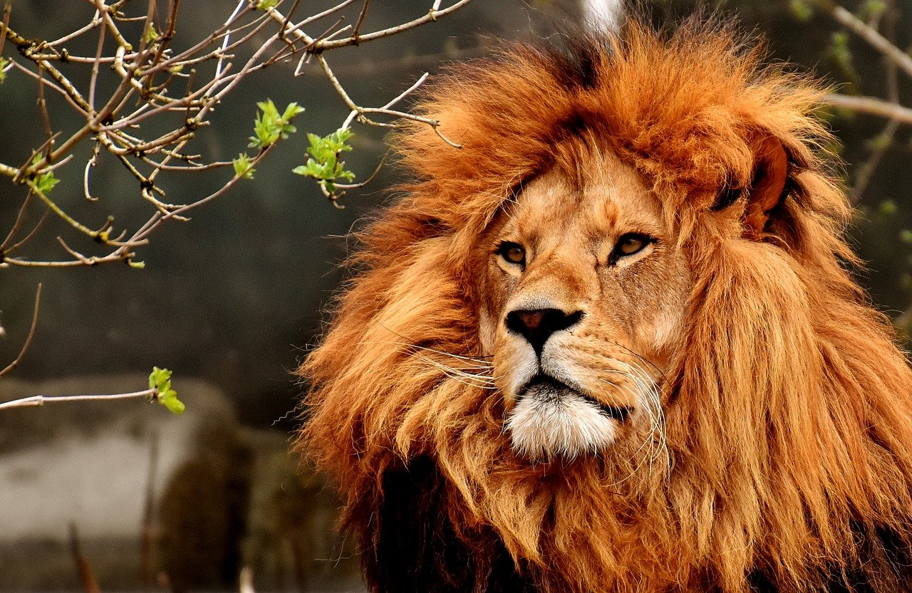
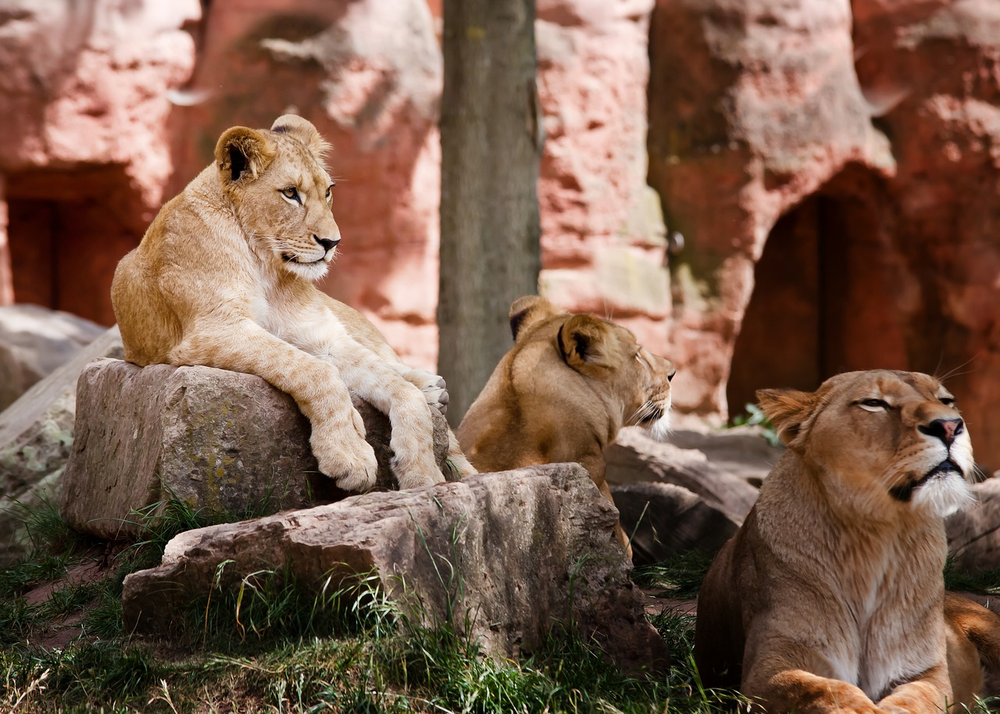
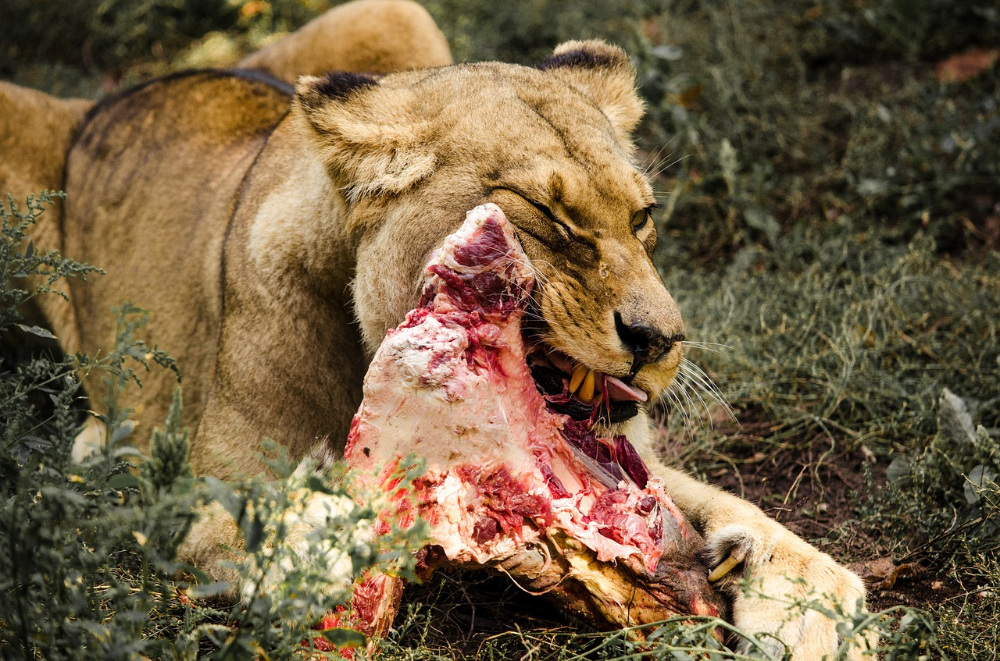
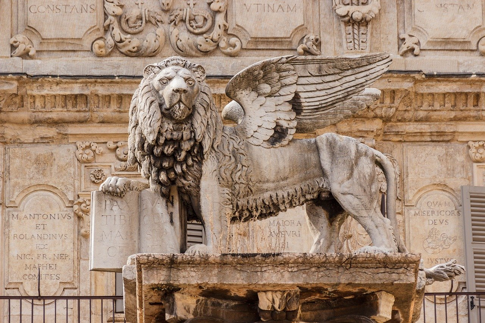

1.分類
学名︰Panthera leo
哺乳綱食肉目ネコ科ヒョウ属に分類される食肉類。
別名はシシ（獅子）。オスは体重は250キログラムを超えることもあり、ネコ科ではトラに次いで2番目に大きな種である。
2.身体的特徴
頭部は太くて短く、丸みを帯びる。背面の毛衣は黄褐色や赤褐色、腹面や四肢内側の毛衣は白い。耳介背面は黒い体毛で被われる。尾の先端には房状に体毛が伸長し、色彩は暗褐色や黒。
オスの成獣は頭部から頸部にかけて、たてがみが発達する。一方でケニアからモザンビーク北部にかけてやサヘル地域などの暑い地域に生息する個体群ではたてがみはあまり発達せず、たてがみがない個体もみられる。飼育個体でも北半球で冬季が寒冷な地方では、たてがみが発達する傾向がある。たてがみは、体を大きく見せたり頭部や頸部に対しての攻撃を防いだりするのに役立つと考えられている。
3.生態的特徴
飼育個体は20年以上生きることもあるが、野生のライオンの寿命はより短く、特にオスが10年以上生きることは稀である。縄張りをめぐって他のオスと常に争うために傷を負い、それが寿命を大きく縮める原因となる。
オス1～3頭、15頭までのメスと幼獣からなる群れを形成して生活する。縄張り内では小規模な群れ（サブプライド）で分散し生活することが多い。生後2～3年で群れから追い出されたオスは、別の群れに入るまでは同じ群れにいたオスと共同で生活する。オスは基本的に他のオスから縄張り内のメスを守る。群れを乗っ取ったオスは群れ内の幼獣を殺し（子殺し）、これによりメスの発情を促し群れ内の競合相手をなくすことで自分の子孫を多く残すことができると考えられている。
4.食性／繁殖
食性
幼獣に限らずほとんどの動物を獲物とすることができるが、成熟したゾウ、サイ、カバ、キリンなど非常に大型の動物になると怪我を負う危険もあるため襲うことはまれといわれる。しかしキリンやバッファローなどは地域によってはしばしば獲物となることがある。たとえばクルーガー国立公園ではキリンが日常的に狩られており、マニャラ公園ではアフリカスイギュウが全体の食事量の62%を占める。
繁殖
繁殖様式は胎生。1回の交尾は約20秒で、1日に最高で50回以上交尾を行うこともある。妊娠期間は98～114日。プライドから離れ、1回に1～6頭（主に2 - 3頭）の幼獣を産む。授乳期間は7～10か月。メスは同じ群れの幼獣を一緒に育て、自分が産んだ幼獣以外にも授乳する。幼獣は生後3か月で肉を食べられるようになる。
5.生息分布
現在の主な生息地はアフリカ大陸のサブサハラであり、インドのジル国立公園のインドライオンは絶滅が危惧されている。北アフリカや西南アジアでは有史時代に姿を消している。更新世末期、約1万年前までライオンはヒトに次いで広く分布する大型陸上哺乳類だった。
6.起源／歴史
オスの容貌はあらゆる文化のなかで動物そのもののシンボルとして最も広まっているものの一つであり、実際に全ての動物の中で国獣として選ばれる数はライオンが最も多い。ライオンは後期旧石器時代から描かれており、古くはラスコー洞窟やショーヴェ洞窟の洞窟画などがある。彫刻や絵画、国旗をはじめ、現代の映画や文学などでも広く扱われている。
開発による生息地及び獲物の減少、毛皮や肉目的の狩猟、娯楽としての乱獲、毒餌による中毒死、害獣としての駆除などにより生息数は減少している。セレンゲティ国立公園では1993～1994年に犬ジステンパーの流行により1,000頭以上の大量死が発生し、生息数が激減した。
